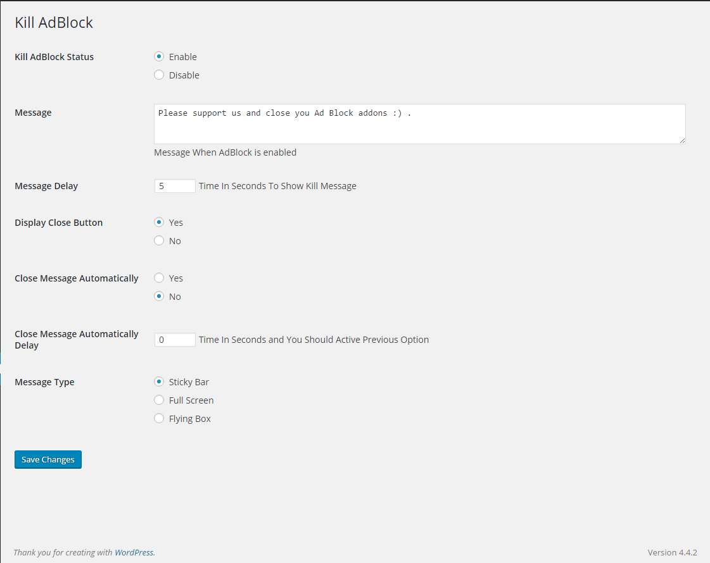
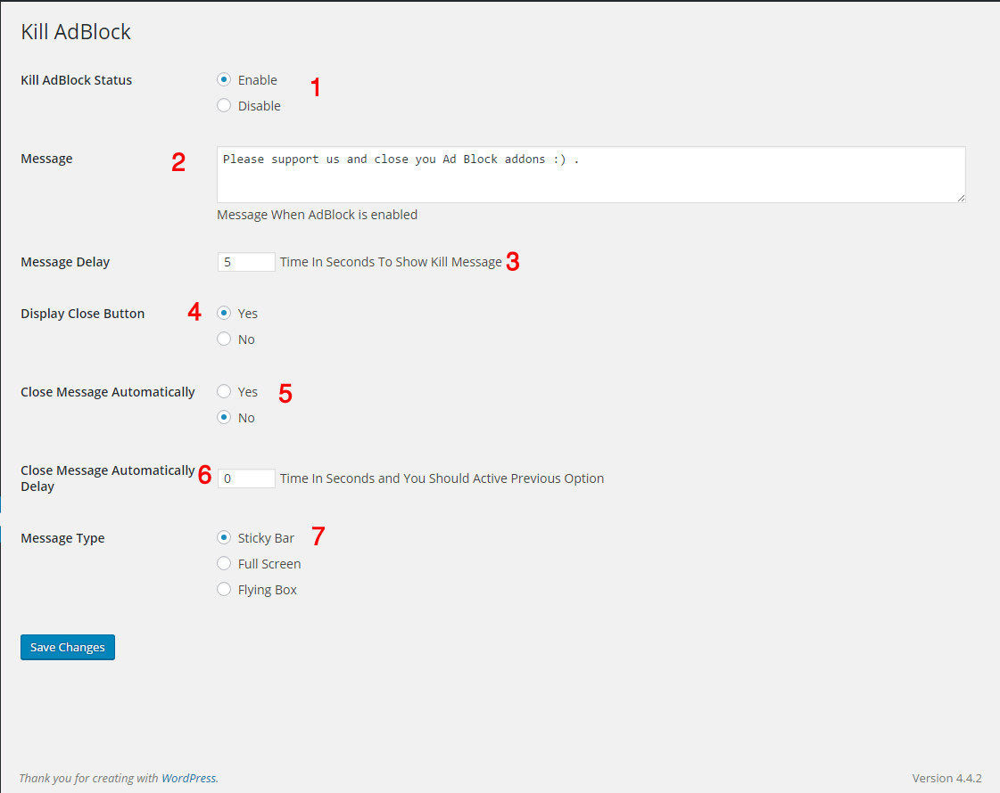

Kill AdBlock is wordpress plugins which detect nasty ad blockers and display custom message to user if ad block addons is enabled.
Quick Facts:
Ad blocking estimated to cost publishers nearly $22 billion during 2015.
There are now 198 million active adblock users around the world.
Ad blocking grew by 41% globally in the last 12 months.
US ad blocking grew by 48% to reach 45 million active users in 12 months up to June 2015.
UK ad blocking grew by 82% to reach 12 million active users in 12 months up to June 2015.
source
Custom message
Random class name to make it to be hard to add this plugins to any adblock filter
Message delay in seconds
Display Close Button or not
Close Message Automatically after few seconds
3 Layouts
Google Chrome
Mozilla Firefox
Internet Explorer (8+)
Safari
Opera
Kill AdBlock Demo
VIDEO Kill AdBlock - How To Enabek Kill AdBlock Plugibn
VIDEO Kill AdBlock Use Sticky Bar Layout
VIDEO Kill AdBlock Display Close Button
VIDEO Kill AdBlock Delay Kill AdBlock Message
VIDEO Kill AdBlock Close Kill AdBlock Message automatically
VIDEO
Upload the KillAdBlock plugin to your blog, Activate it, then enable it from Kill AdBlock Settings page.
1, 2, 3: You\'re done!


1- This option to enabel and disable this plugin
2- Write message which will display to user ( allow to write HTML )
3- If you want to delay this message enter time in sconeds EX. 30
4- If you enable this option end user will see close button to close your message
5- If you enable this option your custom message will close automatically after few sconds will specified below
6- Here enter time in sconeds to close message after page is fully loaded
7- Here you can change message layout from 3 ready layouts
1.2.0
Release Date - 16 February, 2016*